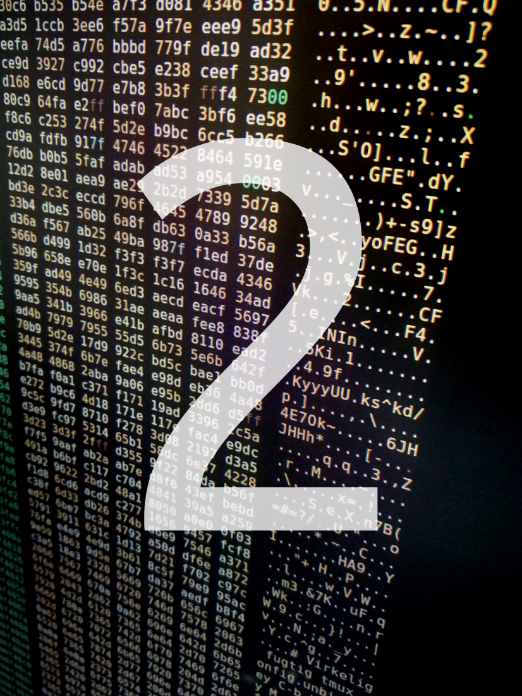

Klokken var lidt i 5, da malware-artisten Freddie "Kvik" Sølv sad ved sin computer og lagde sidste hånd på sit mesterværk: en malware der skulle inficere samtlige af verdenens IoT-toastbrødristere og derved gøre morgenen virkelig nederen for alle. Pludselig blev døren sparket op, og politiets særlige brunchenhed myldrede ind og anholdte Freddie. På Freddies computer fandt politiet en særlig fil, der fik stor betydning for efterforskningen, der i sidste ende fik Freddie dømt til fængsel og grød uden sukker til at drysse på. Hvad viste denne fil, som var så vigtig for efterforskningen?
Download filenmd5sum: 9b9b3f07829cd52de4b317fdc9e27e3d
På et tidspunkt i opgaven ville du skulle sende en tekst besked til en IP-adresse, brug en VPN hvis du har det stramt med dette.